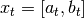
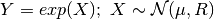
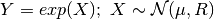
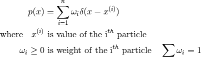
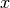
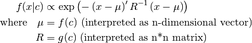
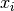

Probability Density Functions¶
This module contains models of common probability density functions, abbreviated as pdfs.
All classes from this module are currently imported to top-level pybayes module, so instead of from pybayes.pdfs import Pdf you can type from pybayes import Pdf.
Random Variables and their Components¶
- class pybayes.pdfs.RV(*components)[source]¶
Representation of a random variable made of one or more components. Each component is represented by RVComp class.
Variables: Please take into account that all RVComp comparisons inside RV are instance-based and component names are purely informational. To demonstrate:
>>> rv = RV(RVComp(1, "a")) >>> ... >>> rv.contains(RVComp(1, "a")) False
Right way to do this would be:
>>> a = RVComp(1, "arbitrary pretty name for a") >>> rv = RV(a) >>> ... >>> rv.contains(a) True
- __init__(*components)[source]¶
Initialise random variable meta-representation.
Parameters: *components (RV, RVComp or a sequence of RVComp items) – components that should form the random variable. You may also pass another RVs which is a shotrcut for adding all their components. Raises TypeError: invalid object passed (neither a RV or a RVComp) Usual way of creating a RV could be:
>>> x = RV(RVComp(1, 'x_1'), RVComp(1, 'x_2')) >>> x.name '[x_1, x_2]' >>> xy = RV(x, RVComp(2, 'y')) >>> xy.name '[x_1, x_2, y]'
- contains(component)[source]¶
Return True if this random variable contains the exact same instance of the component.
Parameters: component (RVComp) – component whose presence is tested Return type: bool
- contains_all(test_components)[source]¶
Return True if this RV contains all RVComps from sequence test_components.
Parameters: test_components (sequence of RVComp items) – list of components whose presence is checked
- contains_any(test_components)[source]¶
Return True if this RV contains any of test_components.
Parameters: test_components (sequence of RVComp items) – sequence of components whose presence is tested
- contained_in(test_components)[source]¶
Return True if sequence test_components contains all components from this RV (and perhaps more).
Parameters: test_components (sequence of RVComp items) – set of components whose presence is checked
- indexed_in(super_rv)[source]¶
Return index array such that this rv is indexed in super_rv, which must be a superset of this rv. Resulting array can be used with numpy.take() and numpy.put().
Parameters: super_rv (RV) – returned indices apply to this rv Return type: 1D numpy.ndarray of ints with dimension = self.dimension
- class pybayes.pdfs.RVComp(dimension, name=None)[source]¶
Atomic component of a random variable.
Variables: - __init__(dimension, name=None)[source]¶
Initialise new component of a random variable RV.
Parameters: - dimension (positive integer) – number of vector components this component occupies
- name (string or None) – name of the component; default: None for anonymous component
Raises: - TypeError – non-integer dimension or non-string name
- ValueError – non-positive dimension
Probability Density Function prototype¶
- class pybayes.pdfs.CPdf[source]¶
Base class for all Conditional (in general) Probability Density Functions.
When you evaluate a CPdf the result generally also depends on a condition (vector) named cond in PyBayes. For a CPdf that is a Pdf this is not the case, the result is unconditional.
Every CPdf takes (apart from others) 2 optional arguments to constructor: rv (RV) and cond_rv (RV). When specified, they denote that the CPdf is associated with a particular random variable (respectively its condition is associated with a particular random variable); when unspecified, anonymous random variable is assumed (exceptions exist, see ProdPdf). It is an error to pass RV whose dimension is not same as CPdf’s dimension (or cond dimension respectively).
Variables: - rv (RV) – associated random variable (always set in constructor, contains at least one RVComp)
- cond_rv (RV) – associated condition random variable (set in constructor to potentially empty RV)
While you can assign different rv and cond_rv to a CPdf, you should be cautious because sanity checks are only performed in constructor.
While entire idea of random variable associations may not be needed in simple cases, it allows you to express more complicated situations. Assume the state variable is composed of 2 components  and following probability density function has to be modelled:
This is done in PyBayes with associated RVs:
>>> a_t, b_t = RVComp(1, 'a_t'), RVComp(1, 'b_t') # create RV components >>> a_tp, b_tp = RVComp(1, 'a_{t-1}'), RVComp(1, 'b_{t-1}') # t-1 case
>>> p1 = LinGaussCPdf(1., 0., 1., 0., RV(a_t), RV(a_tp, b_t)) >>> # params for p2: >>> cov, A, b = np.array([[0.0001]]), np.array([[1.]]), np.array([0.]) >>> p2 = MLinGaussCPdf(cov, A, b, RV(b_t), RV(b_tp))
>>> p = ProdCPdf((p1, p2), RV(a_t, b_t), RV(a_tp, b_tp))
>>> p.sample(np.array([1., 2.])) >>> p.eval_log()
- shape()[source]¶
Return shape of the random variable. mean() and variance() methods must return arrays of this shape.
Return type: int
- mean(cond=None)[source]¶
Return (conditional) mean value of the pdf.
Return type: numpy.ndarray
- variance(cond=None)[source]¶
Return (conditional) variance (diagonal elements of covariance).
Return type: numpy.ndarray
- eval_log(x, cond=None)[source]¶
Return logarithm of (conditional) likelihood function in point x.
Parameters: x (numpy.ndarray) – point which to evaluate the function in Return type: double
- sample(cond=None)[source]¶
Return one random (conditional) sample from this distribution
Return type: numpy.ndarray
- samples(n, cond=None)[source]¶
Return n samples in an array. A convenience function that just calls shape() multiple times.
Parameters: n (int) – number of samples to return Return type: 2D numpy.ndarray of shape (n, m) where m is pdf dimension
- class pybayes.pdfs.Pdf[source]¶
Base class for all unconditional (static) multivariate Probability Density Functions. Subclass of CPdf.
As in CPdf, constructor of every Pdf takes optional rv (RV) keyword argument (and no cond_rv argument as it would make no sense). For discussion about associated random variables see CPdf.
Unconditional Probability Density Functions (pdfs)¶
- class pybayes.pdfs.UniPdf(a, b, rv=None)[source]¶
Simple uniform multivariate probability density function. Extends Pdf.
Variables: - a – left border
- b – right border
You may modify these attributes as long as you don’t change their shape and assumption a < b still holds.
- __init__(a, b, rv=None)[source]¶
Initialise uniform distribution.
Parameters: - a (numpy.ndarray) – left border
- b (numpy.ndarray) – right border
b must be greater (in each dimension) than a
- class pybayes.pdfs.AbstractGaussPdf[source]¶
Abstract base for all Gaussian-like pdfs - the ones that take vector mean and matrix covariance parameters. Extends Pdf.
Variables: - mu – mean value
- R – covariance matrix
You can modify object parameters only if you are absolutely sure that you pass allowable values - parameters are only checked once in constructor.
- class pybayes.pdfs.GaussPdf(mean, cov, rv=None)[source]¶
Unconditional Gaussian (normal) probability density function. Extends AbstractGaussPdf.
- __init__(mean, cov, rv=None)[source]¶
Initialise Gaussian pdf.
Parameters: - mean (1D numpy.ndarray) – mean value; stored in mu attribute
- cov (2D numpy.ndarray) – covariance matrix; stored in R arrtibute
Covariance matrix cov must be positive definite. This is not checked during initialisation; it fail or give incorrect results in eval_log() or sample(). To create standard normal distribution:
>>> # note that cov is a matrix because of the double [[ and ]] >>> norm = GaussPdf(np.array([0.]), np.array([[1.]]))
- class pybayes.pdfs.LogNormPdf(mean, cov, rv=None)[source]¶
Unconditional log-normal probability density function. Extends AbstractGaussPdf.
More precisely, the density of random variable
 where

where
- __init__(mean, cov, rv=None)[source]¶
Initialise log-normal pdf.
Parameters: - mean (1D numpy.ndarray) – mean value of the logarithm of the associated random variable
- cov (2D numpy.ndarray) – covariance matrix of the logarithm of the associated random variable
A current limitation is that LogNormPdf is only univariate. To create standard log-normal distribution:
>>> lognorm = LogNormPdf(np.array([0.]), np.array([[1.]])) # note the shape of covariance
- class pybayes.pdfs.AbstractEmpPdf[source]¶
An abstraction of empirical probability density functions that provides common methods such as weight normalisation. Extends Pdf.
Variables: weights (numpy.ndarray) – 1D array of particle weights 
- normalise_weights()[source]¶
Multiply weights by appropriate constant so that
Raises AttributeError: when or
- get_resample_indices()[source]¶
Calculate first step of resampling process (dropping low-weight particles and replacing them with more weighted ones.
Returns: integer array of length n: where  means
that particle at ith place should be replaced with particle number
means
that particle at ith place should be replaced with particle number Return type: numpy.ndarray of ints This method doesnt modify underlying pdf in any way - it merely calculates how particles should be replaced.
- class pybayes.pdfs.EmpPdf(init_particles, rv=None)[source]¶
Weighted empirical probability density function. Extends AbstractEmpPdf.

Variables: particles (numpy.ndarray) – 2D array of particles; shape: (n, m) where n is the number of particles, m dimension of this pdf You may alter particles and weights, but you must ensure that their shapes match and that weight constraints still hold. You can use normalise_weights() to do some work for you.
- __init__(init_particles, rv=None)[source]¶
Initialise empirical pdf.
Parameters: init_particles (numpy.ndarray) – 2D array of initial particles; shape (n, m) determines that n m-dimensioned particles will be used. Warning: EmpPdf does not copy the particles - it rather uses passed array through its lifetime, so it is not safe to reuse it for other purposes.
- class pybayes.pdfs.MarginalizedEmpPdf(init_gausses, init_particles, rv=None)[source]¶
An extension to empirical pdf (EmpPdf) used as posterior density by MarginalizedParticleFilter. Extends AbstractEmpPdf.
Assume that random variable  can be divided into 2 independent parts , then probability density function can be written as
Variables: - gausses (numpy.ndarray) – 1D array that holds GaussPdf for each particle; shape: (n) where n is the number of particles
- particles (numpy.ndarray) – 2D array of particles; shape: (n, m) where n is the number of particles, m dimension of the “empirical” part of random variable
You may alter particles and weights, but you must ensure that their shapes match and that weight constraints still hold. You can use normalise_weights() to do some work for you.
Note: this pdf could have been coded as ProdPdf of EmpPdf and a mixture of GaussPdfs. However it is implemented explicitly for simplicity and speed reasons.
- __init__(init_gausses, init_particles, rv=None)[source]¶
Initialise marginalized empirical pdf.
Parameters: - init_gausses (numpy.ndarray) – 1D array of GaussPdf objects, all must have the dimension
- init_particles (numpy.ndarray) – 2D array of initial particles; shape (n, m) determines that n particles whose empirical part will have dimension m
Warning: MarginalizedEmpPdf does not copy the particles - it rather uses both passed arrays through its lifetime, so it is not safe to reuse them for other purposes.
- class pybayes.pdfs.ProdPdf(factors, rv=None)[source]¶
Unconditional product of multiple unconditional pdfs.
You can for example create a pdf that has uniform distribution with regards to x-axis and normal distribution along y-axis. The caller (you) must ensure that individial random variables are independent, otherwise their product may have no mathematical sense. Extends Pdf.
- __init__(factors, rv=None)[source]¶
Initialise product of unconditional pdfs.
Parameters: factors (sequence of Pdf) – sequence of sub-distributions As an exception from the general rule, ProdPdf does not create anonymous associated random variable if you do not supply it in constructor - it rather reuses components of underlying factor pdfs. (You can of course override this behaviour by bassing custom rv.)
Usual way of creating ProdPdf could be:
>>> prod = ProdPdf((UniPdf(...), GaussPdf(...))) # note the double (( and ))
Conditional Probability Density Functions (cpdfs)¶
In this section, variable  in math exressions denotes condition.
in math exressions denotes condition.
- class pybayes.pdfs.MLinGaussCPdf(cov, A, b, rv=None, cond_rv=None, base_class=None)[source]¶
Conditional Gaussian pdf whose mean is a linear function of condition. Extends CPdf.
- __init__(cov, A, b, rv=None, cond_rv=None, base_class=None)[source]¶
Initialise Mean-Linear Gaussian conditional pdf.
Parameters: - cov (2D numpy.ndarray) – covariance of underlying Gaussian pdf
- A (2D numpy.ndarray) – given condition ,
- b (1D numpy.ndarray) – see above
- base_class (class) – class whose instance is created as a base pdf for this cpdf. Must be a subclass of AbstractGaussPdf and the default is GaussPdf. One alternative is LogNormPdf for example.
- class pybayes.pdfs.LinGaussCPdf(a, b, c, d, rv=None, cond_rv=None, base_class=None)[source]¶
Conditional one-dimensional Gaussian pdf whose mean and covariance are linear functions of condition. Extends CPdf.
- __init__(a, b, c, d, rv=None, cond_rv=None, base_class=None)[source]¶
Initialise Linear Gaussian conditional pdf.
Parameters: - a, b (double) – mean = a*cond_1 + b
- c, d (double) – covariance = c*cond_2 + d
- base_class (class) – class whose instance is created as a base pdf for this cpdf. Must be a subclass of AbstractGaussPdf and the default is GaussPdf. One alternative is LogNormPdf for example.
- class pybayes.pdfs.GaussCPdf(shape, cond_shape, f, g, rv=None, cond_rv=None, base_class=None)[source]¶
The most general normal conditional pdf. Use it only if you cannot use MLinGaussCPdf or LinGaussCPdf as this cpdf is least optimised. Extends CPdf.

- __init__(shape, cond_shape, f, g, rv=None, cond_rv=None, base_class=None)[source]¶
Initialise general gauss cpdf.
Parameters: - shape (int) – dimension of random variable
- cond_shape (int) – dimension of conditioning variable
- f (callable) – where c = condition
- g (callable) – where c = condition
- base_class (class) – class whose instance is created as a base pdf for this cpdf. Must be a subclass of AbstractGaussPdf and the default is GaussPdf. One alternative is LogNormPdf for example.
Please note that the way of specifying callback function f and g is not yet fixed and may be changed in future.
- class pybayes.pdfs.ProdCPdf(factors, rv=None, cond_rv=None)[source]¶
Pdf that is formed as a chain rule of multiple conditional pdfs. Extends CPdf.
In a simple textbook case denoted below it isn’t needed to specify random variables at all. In this case when no random variable associations are passed, ProdCPdf ignores rv associations of its factors and everything is determined from their order. ( are arbitrary vectors)
>>> f = ProdCPdf((f1, f2, f3))
For less simple situations, specifiying random value associations is needed to estabilish data-flow:
>>> # prepare random variable components: >>> x_1, x_2 = RVComp(1), RVComp(1, "name is optional") >>> y_1, y_2 = RVComp(1), RVComp(1, "but recommended")
>>> p_1 = SomePdf(..., rv=RV(x_1), cond_rv=RV(x_2)) >>> p_2 = SomePdf(..., rv=RV(x_2), cond_rv=RV(y_2, y_1)) >>> p = ProdCPdf((p_2, p_1), rv=RV(x_1, x_2), cond_rv=RV(y_1, y_2)) # order of >>> # pdfs is insignificant - order of rv components determines data flow
Please note: this will change in near future in following way: it will be always required to specify rvs and cond_rvs of factor pdfs (at least ones that are shared), but product rv and cond_rv will be inferred automatically when not specified.